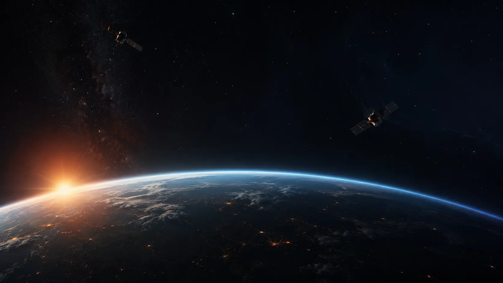

Keeping Hope Connected
When disaster strikes and terrestrial networks fail,
emergency communication must not.
Modern connectivity depends entirely on ground-based infrastructure — towers, cables, exchanges, and power grids. In moments of crisis, these systems collapse exactly when people need them most.
Victims cannot request assistance
Families cannot communicate safety
Responders lose critical information
Rescue operations slow and fail
"No call for help should go unheard
because a network went down."
It is a non-profit space initiative building an emergency communication infrastructure that remains operational during disasters. By combining low-cost emergency devices with a future satellite mesh network, It aims to make emergency connectivity accessible when it matters most.
Operates beyond terrestrial infrastructure — unaffected by local network failures
Low-cost devices designed for real communities, not just those with resources
Mesh satellite architecture ensures routing redundancy across vast distances
Non-profit mission — built for people, not profit
Individuals transmit emergency messages — SOS requests, GPS coordinates, medical emergencies — using dedicated handheld devices.
Satellites communicate through an inter-satellite mesh, routing emergency messages efficiently across large distances with full redundancy.
The nearest operational satellite forwards messages to ground control. Responders assess, coordinate, dispatch, and monitor affected regions.
Mission architecture, feasibility analysis, system definition, and foundational planning.
Development and validation of the emergency communication framework at ground level. Current focus.
Testing and validation of stabilization and control technologies.
Transitioning communication systems toward orbital operation.
Orbital mechanics, spacecraft stabilization, and mission integration.
Licensing, compliance, launch preparation, and deployment.
Founder & Mission Lead, AkshaRaksha
AkshaRaksha was initiated as an independent humanitarian space mission — born from a conviction that communication is not merely a convenience during disasters, but the difference between rescue and isolation.
The mission bridges communication systems, embedded technologies, space engineering, and humanitarian purpose — focused on one critical challenge: ensuring that when everything else fails, a call for help can still be heard.
Explore full portfolioIt is an independent initiative in active development. Researchers, engineers, students, organizations, mentors, and supporters who share the vision of resilient emergency communication are welcome to contribute, collaborate, and shape the future of this mission.